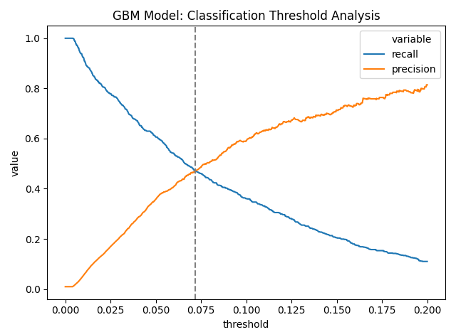

Lead scoring ML system
A static, review-friendly view of model behavior using the aggregate precision-recall tradeoff. No raw accounts, customer records, or private report pages are included.

A static, review-friendly view of model behavior using the aggregate precision-recall tradeoff. No raw accounts, customer records, or private report pages are included.
